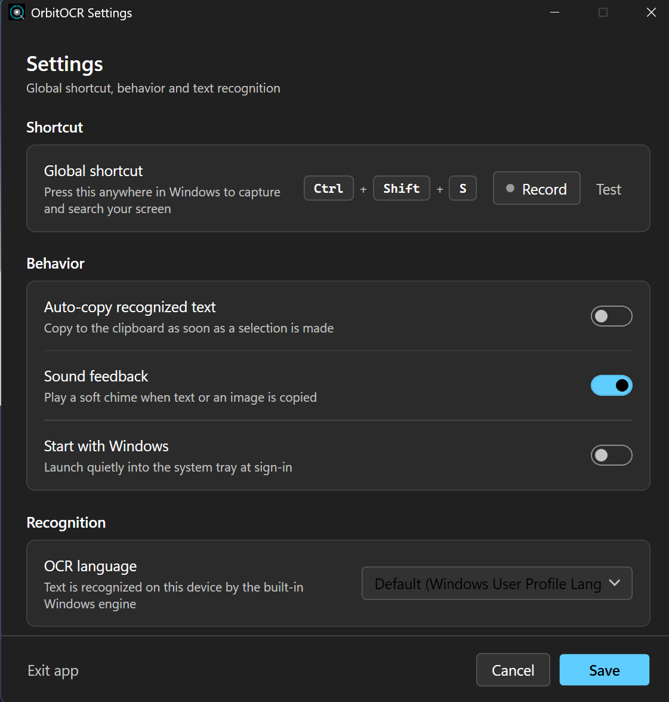

Circle to Search for Windows — free, offline, open source
Press Ctrl + Shift + S to freeze and dim the whole desktop, then copy text off the screen or freehand-circle any image to search it with Google Lens. No cloud, no installer.

What is OrbitOCR?
OrbitOCR is a free, open-source utility for Windows 10 and Windows 11 that brings a Circle to Search–style workflow to the desktop. One hotkey freezes and dims every monitor, so you can grab text or search an image from anything on screen — a paused video, an open menu, a hover tooltip, a PDF viewer, or an app that normally blocks selection.
Text recognition runs entirely on the OCR engine already built into Windows (Windows.Media.Ocr). There is no cloud service, no telemetry, no account, and no bundled Tesseract or Python.
How it works
- Trigger — press your global hotkey (default
Ctrl + Shift + S). The desktop freezes and dims across all displays. - Select text — detected words get a subtle underline; click one or drag across a phrase to copy it or send it to Google Search.
- Circle an image — draw a freehand lasso around any object or region, then search it with Google Lens, copy it, or save it as PNG/JPEG.
Features
The floating action pill adapts to context: Copy Text and Search Google for text selections; Search with Lens, Copy Image, and Save Image for circled regions.
Works 100% offline — your screen never leaves your PC
- OCR is performed locally by the Windows OCR engine.
- No analytics, crash reporting, accounts, or auto-updater phoning home.
- The only two actions that leave your device are the ones you click explicitly: Search Google and Search with Lens, which simply open your default browser.
- You can verify this: block the executable in your firewall or watch it in Resource Monitor — idle means idle. The source is MIT-licensed and available to audit or build yourself.
Requirements
- Windows 10 version 2004 (build 19041) or later, or Windows 11 — x64.
- At least one Windows OCR language pack (English ships with Windows). Additional languages are added in Settings → Time & Language.
- No .NET runtime required — the download is self-contained.
How to install
- Download OrbitOCR.exe from GitHub Releases.
- Put it in any folder and run it. The binary is unsigned, so SmartScreen may warn on first launch — choose More info → Run anyway.
- Set your hotkey in Settings and, optionally, enable Start with Windows.
OrbitOCR vs other Windows OCR tools
| Capability | OrbitOCR | PowerToys Text Extractor | Snipping Tool | ShareX |
|---|---|---|---|---|
| Free & open source | Yes (MIT) | Yes | Built-in | Yes |
| Freezes the whole multi-monitor desktop | Yes | No | No | No |
| Click or drag detected text directly | Yes | Region only | Region only | Region only |
| Freehand circle → Google Lens | Yes | No | No | No |
| Offline OCR | Yes | Yes | Yes | Yes |
| Portable — no installation | Yes | Needs PowerToys | Built-in | Installer |
FAQ
Is there a Circle to Search for Windows?
Windows has no native equivalent. OrbitOCR is a free, open-source Circle to Search–style tool that brings the same freeze-and-select workflow to Windows 10 and 11.
Is OrbitOCR free?
Yes. It is MIT-licensed with no paid tier, account, or upsell.
Does OrbitOCR work offline?
Yes. OCR runs locally through the Windows OCR engine. The app needs no internet connection to recognize text.
Does OrbitOCR send my data anywhere?
Only when you explicitly click Search Google or Search with Lens — those open your browser with your selection. Nothing else leaves your device, and there is no telemetry.
How do I install it?
Download OrbitOCR.exe from GitHub Releases and run it. There is no installer, no admin requirement, and no separate .NET runtime to install.
What are the requirements?
Windows 10 version 2004 (build 19041) or later, or Windows 11, x64, plus at least one installed Windows OCR language pack.
How is it different from PowerToys Text Extractor?
PowerToys extracts text from a selected region. OrbitOCR freezes the entire multi-monitor desktop first — so you can capture hover tooltips, open menus, or paused video — adds direct click/drag selection of detected words, and supports freehand circle → Google Lens for images.
Does it support multiple monitors?
Yes. It captures and dims the whole virtual desktop and is PerMonitorV2 DPI-aware.
Does it need admin rights?
No. It runs with the standard user token (asInvoker) and stores settings in %APPDATA%\OrbitOCR.
Which OCR languages are supported?
Any Windows OCR language pack installed on your system. By default it follows your Windows user-profile languages.